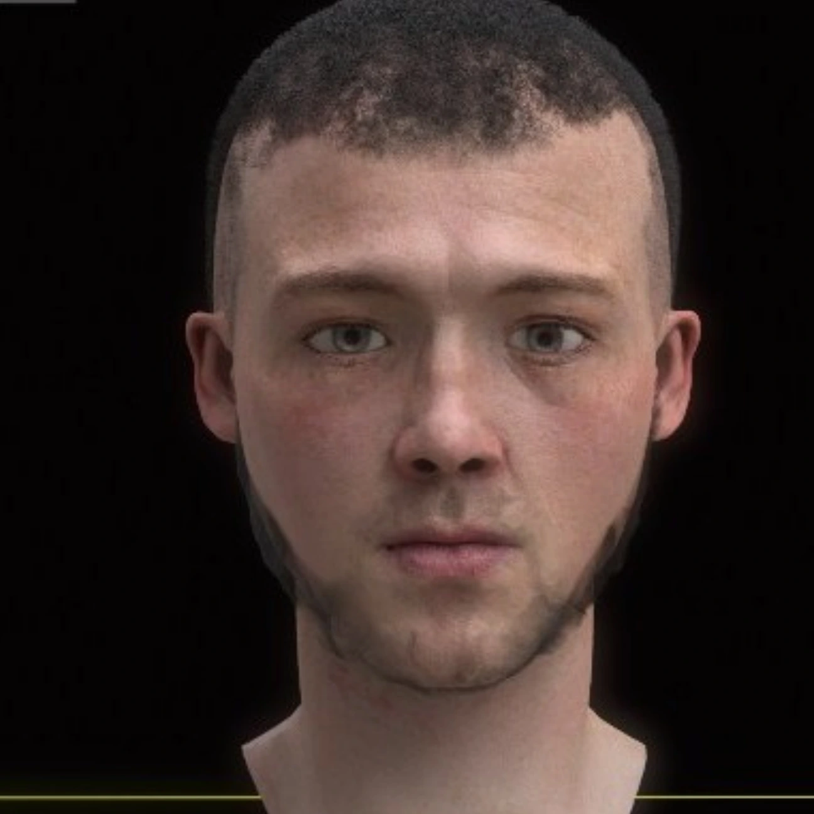

3D / SCULPTURE & ENVIRONMENT
FORM
& DETAIL.
从形体，
一直走到细节。

3D / SCULPTURE & ENVIRONMENT08
PROJECT OVERVIEW / 项目概述
The project.
从形体雕刻、拓扑和材质到灯光渲染，全部由个人手工完成。作品覆盖写实人物、建筑场景和道具，探索形体结构与表面细节如何共同建立可信的视觉感受。
- DISCIPLINE / 方向
- 手工建模 / 材质与渲染
- ROLE / 负责内容
- ZBrush、Maya、Blender；建模 / 材质 / 渲染
- DELIVERABLES / 产出
- 人物 / 建筑场景 / 道具资产
01人物研究
形体决定轮廓，
细节建立真实感。
以人物面部为对象，从整体比例推进到局部表面细节。
02建筑与道具
从一个人，
走向一个场景。
把建模能力延展到建筑空间与道具资产，通过材质、光线与场景组织建立画面。
结构、材质、光线，
一起构成空间。
建筑与道具分别回应不同尺度的造型需求，在场景中组织体量、细节和视觉重点。
03制作流程
手工完成，
每一个阶段。
以 ZBrush、Maya 与 Blender 串联雕刻、建模整理和最终渲染。
01 / ZBRUSH
雕刻
完成角色形体与局部细节。
02 / MAYA
建模与拓扑
整理模型结构与场景资产。
03 / BLENDER
材质与渲染
组织材质、灯光与最终画面。
ORIGINAL PROJECT / 04 PAGES查看完整原稿
保留原有方案的全部页面。点击图片可放大查看细节。